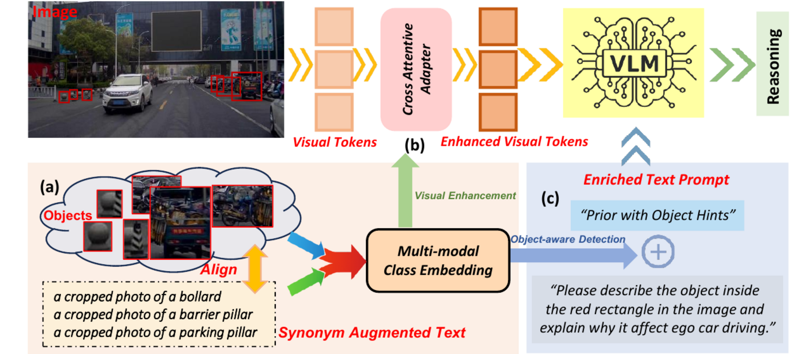
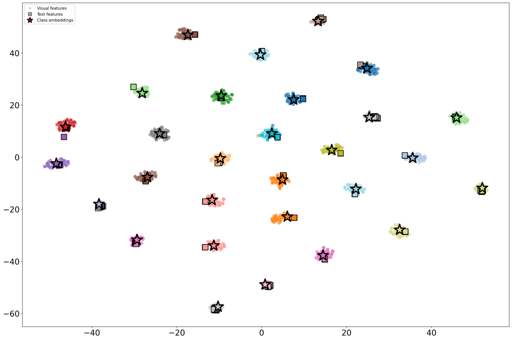
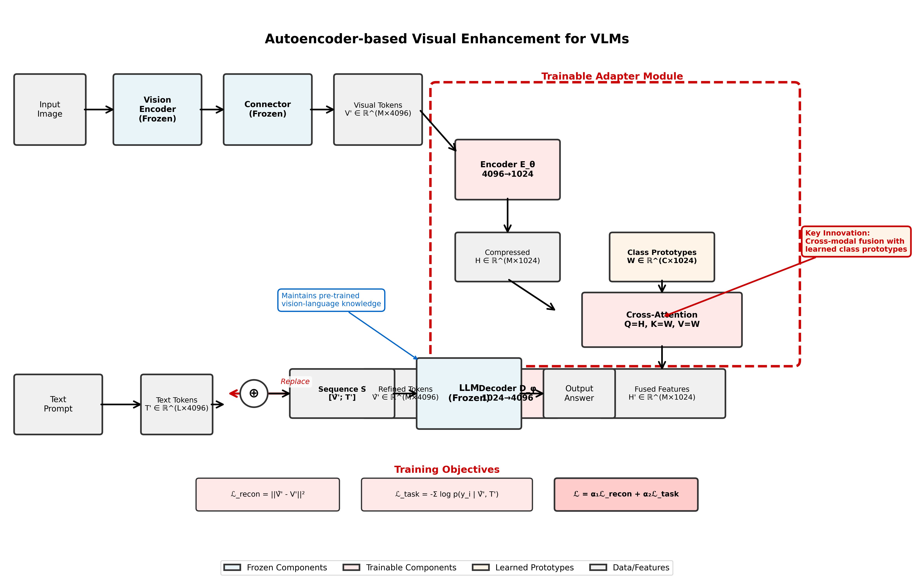
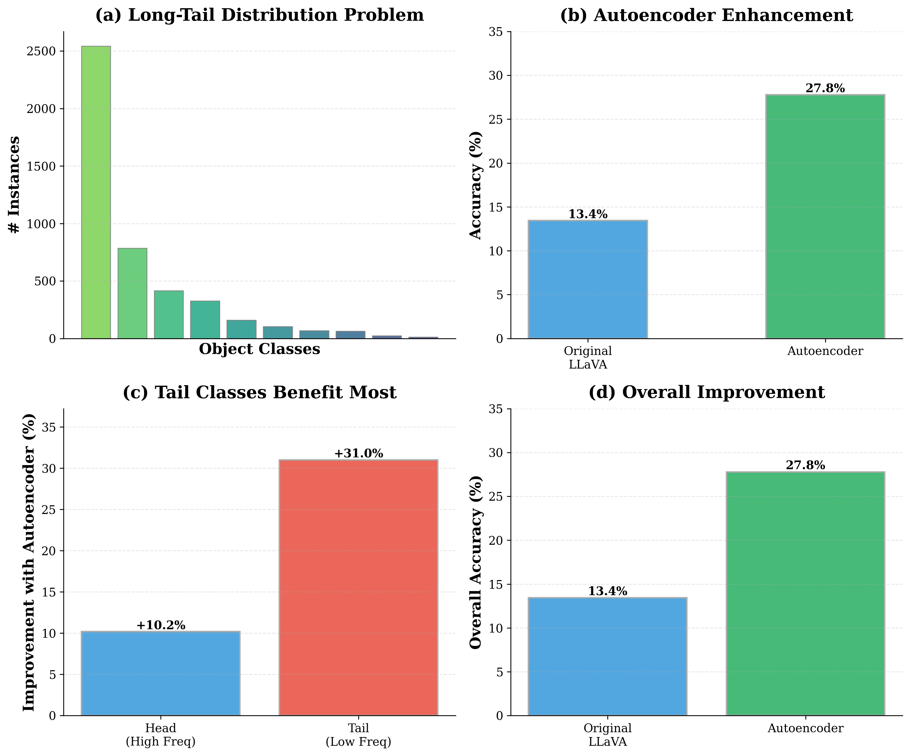
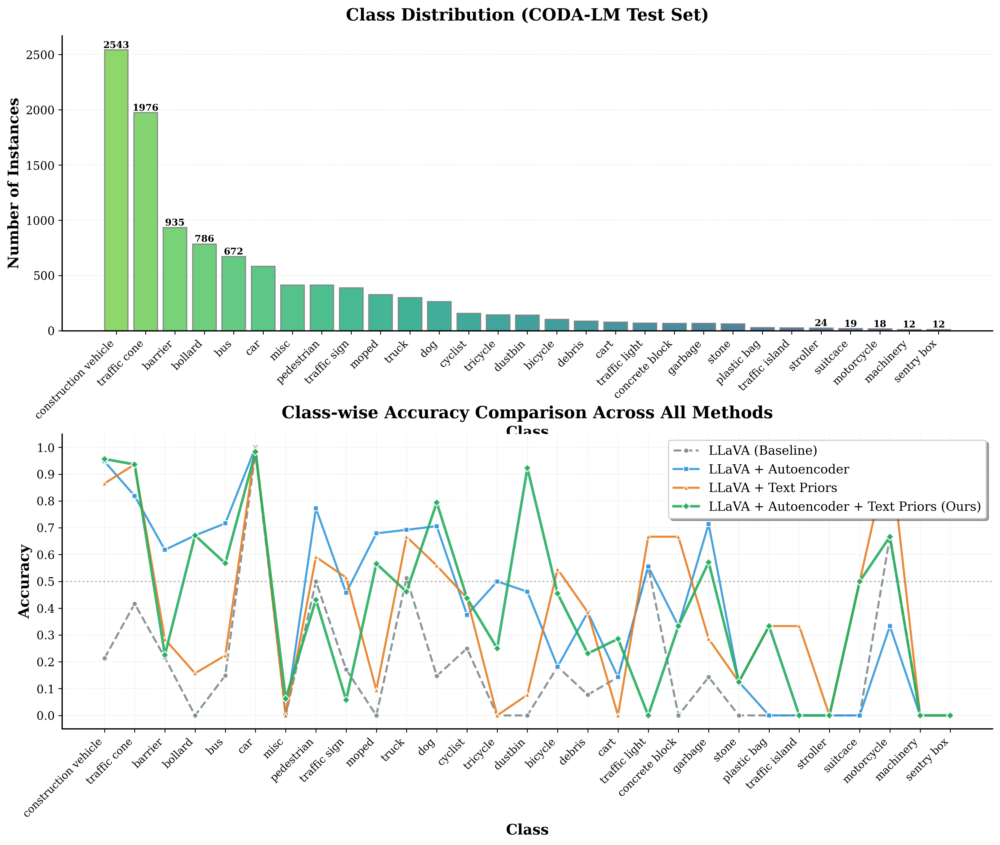

VLMs can reason fluently about the wrong object.
Rare objects in driving scenes are often visible to humans but under-attended by general VLMs. Our method learns class-aware multi-modal embeddings and uses them to refine visual tokens and provide object hints, while keeping the VLM backbone frozen.
One class memory, two plug-and-play remedies.
The framework learns multi-modal class embeddings from region-level visual evidence and synonym-augmented text. The same class memory drives visual token enhancement and object-aware prompt enrichment at inference time.

Class-aware visual and textual anchors.
We learn multi-modal class embeddings from object-region visual features and synonym-augmented text descriptions. These embeddings become compact anchors for rare object categories.
| Component | Purpose |
|---|---|
| Class embeddings | Fuse visual details from VFMs with text-side semantic variation. |
| Visual refinement | Use cross-attention to inject class-discriminative cues into VLM visual tokens. |
| Object hints | Detect likely rare objects and enrich the prompt with top-k candidates. |

Lightweight visual token refinement.
The adapter maps VLM visual tokens into a class-embedding space, attends to learned prototypes, and decodes refined visual tokens back into the language model space. It is trained with reconstruction and autoregressive objectives.

CODA-LM is the main reproduction path.
The public release centers on CODA-LM region perception because it directly matches the paper's rare object reasoning motivation and provides enough training and test coverage for reproducible experiments.


Qualitative behavior.
The model becomes more likely to name the marked rare object correctly and produce driving-relevant explanations after visual refinement and object-hint injection.

Citation
@inproceedings{hu2026seeing,
title={Seeing Clearly, Reasoning Confidently: Plug-and-Play Remedies for Vision Language Model Blindness},
author={Hu, Xin and Ni, Haomiao and Zhang, Yunbei and Hamm, Jihun and Li, Zechen and Ding, Zhengming},
booktitle={Proceedings of the IEEE/CVF Conference on Computer Vision and Pattern Recognition},
pages={18806--18815},
year={2026}
}Code, checkpoint links, and CODA-LM reproduction scripts will be added as the release is finalized.